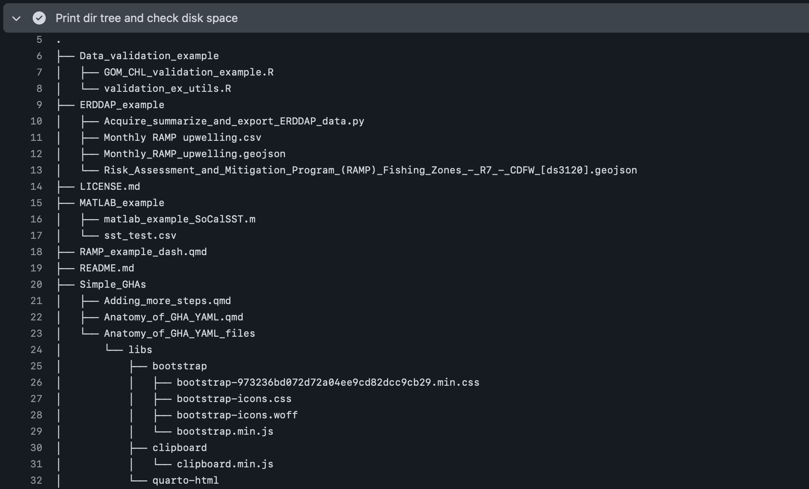
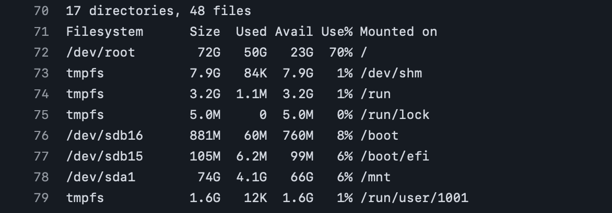

Adding more steps to a job
1 Background
In the previous section, we only ran two steps within a single job on a single runner to list all files within the repository. While this was a simple example, we can build additional steps into this workflow that allow us to do a variety of things using 1) pre-made actions (e.g., actions/checkout@v5), 2) code that is written directly in the YAML, or 3) custom scripts from a variety of programming languages (e.g., R, Python, MATLAB). Depending on the task at hand, this may require the installation of additional software not already included on the runner. Additionally, users may be interested in committing files created in the GitHub Actions job to the repo, or may want to build, test, and release software.
2 Using actions to install software
Although Python comes pre-installed on the runners, common scientific languages such as R and MATLAB are not immediately available and require some extra steps. Additionally, Conda software for Python needs to be installed if creating a virtual environment since this is also not readily available out-of-the-box.
Below are a few simple examples of installing the aforementioned software:
r_install.yml
name: R installation
on:
# triggered on push to repo (specifically the 'main' branch)
push:
branches: main
jobs:
r_install:
runs-on: ubuntu-latest
steps:
- name: Check out repository
uses: actions/checkout@v5
- name: Install R
1 uses: r-lib/actions/setup-r@v2
with:
r-version: '4.4.3' #(optional) specification of version and other settings- 1
-
Actionprovided to install R regardless of operating system
conda_install.yml
name: Conda installation
on:
# triggered on push to repo (specifically the 'main' branch)
push:
branches: main
jobs:
conda_install:
runs-on: ubuntu-latest
steps:
- name: Check out repository
uses: actions/checkout@v5
- name: Install Conda
1 uses: conda-incubator/setup-miniconda@v3
with:
auto-update-conda: true
python-version: 3.12 #(optional) specification of version- 1
-
Actionprovided to install Conda regardless of operating system (for both Conda and Mamba)
matlab_install.yml
name: MATLAB installation
on:
# triggered on push to repo (specifically the 'main' branch)
push:
branches: main
jobs:
matlab_install:
runs-on: ubuntu-latest
steps:
- name: Check out repository
uses: actions/checkout@v5
- name: Set up MATLAB
1 uses: matlab-actions/setup-matlab@v2
with:
release: R2024a #(optional) specification of version- 1
-
Actionprovided to install MATLAB regardless of operating system
Installation of this software defaults to the latest release (available for the GitHub Action). If an older version is desired, this would need to be explicitly specified to take effect. Many more settings are typically available for specification in each action, and these can be referenced from the associated GitHub repos that store these actions.
It should be noted that the available actions for setting up and using MATLAB within a GitHub Actions workflow are only available for public repos. If have wish to use a private repo, you may be able to request a MATLAB batch processing token to pursue this further. More information on the options available can be found on the page for the MATLAB setup action.
3 Using actions to install dependencies
Once the software has been installed (if not already available) to use your programming language of choice, there are typically a set of packages that are needed to use certain functions within scripts. For example, users interested in performing geospatial analyses in R or Python may want to install the terra or xarray packages for handling raster files and sf or geopandas for handling vector layers. Since these packages are not installed by default, we need to provide some instructions to the virtual machine in order to install these packages prior to running any code.
There a few different ways to approach this, which varies per programming language. So this description is by no means comprehensive. Below are a list of different options for specifying dependencies prior to installation on a GitHub Actions runner.
- Listing all packages within a DESCRIPTION file
- Using
{renv}to create a lockfile on your local computer that is passed to GitHub Actions - Manual package installation via running
install.packages()function instead of usingactions - Specification of packages using the
packagesandextra-packagesarguments of thesetup-r-dependenciesaction - Allow the
setup-r-dependenciesaction to auto-detect which packages (and versions) to install from the R scripts (or Quarto docs) that are included in your directory
The use of renv to create a lockfile to track packages (and versions) associated with a project is generally considered best practice given improvements to reproducibility, but there can be issues when installing geospatial packages and associated base libraries on a virtual machine. A DESCRIPTION file is most common when building R packages, but can also be used for standard repositories as well and may help avoid some of the drawbacks of using renv while maintaining greater reproducibility. The simplest ways to install a relatively large number of packages across files is to allow auto-detection of packages for installation by the action, but this is generally less reproducible since the package versions are subject to change upon new releases, which may break your code.
- Create a
requirements.txtfile that stores a list of all dependencies associated with project - Use the Poetry tool for automatic dependency management and lockfile creation
The creation and use of a requirements.txt file seems to be the most widely used (and simplest) method. However, Poetry seems to potentially improve reproducibility through lockfile creation on local computer.
As an example for R projects, a simple DESCRIPTION file may look something like this:
DESCRIPTION
Package: CEG_operationalization
Title: Cyberinfrastructure for Tool Operationalization
Version: 0.1
Authors@R:
person(
"Josh", "Cullen", "josh.cullen@noaa.gov",
role = c("aut", "cre"))
Description: This code provides cyberinfrastructure to automate operational tools related to species distribution models of marine megafauna.
Encoding: UTF-8
Roxygen: list(markdown = TRUE)
RoxygenNote: 7.2.3
Imports:
dplyr,
readr,
purrr,
glue,
terra,
ncdf4where the simplest way to initialize the file to ensure success is through the use of the usethis::use_description() function and then manually editing the file as needed.
By comparison, the simplest way to create a requirements.txt file for Python projects is through a simple pip freeze > requirements.txt command run from your root directory. This will then create a .txt file that may look something like this:
requirements.txt
geopandas==1.1.1
matplotlib==3.10.6
numpy==2.3.3
pandas==2.3.2
regionmask==0.13.0
xarray==2025.1.1
datetime
netcdf4
pathlibwhere the == syntax is used to specify the exact package version that is used. If no version is specified, the latest version will be installed. If not all relevant packages are listed, you can easily edit this file and continue to add necessary packages.
Below are a couple examples showing how to install dependencies for R and Python. For the R example, this workflow assumes that a subsequent step would be to run one or more R scripts or Quarto docs (although not included here).
r_dep.yml
name: Include R dependencies
on:
push:
branches: main
jobs:
r_deps:
runs-on: ubuntu-latest
steps:
- name: Check out repository
uses: actions/checkout@v5
- name: Install R
uses: r-lib/actions/setup-r@v2
with:
1 extra-repositories: "https://ianjonsen.r-universe.dev" #define R-Universe repo
- name: Install R packages
2 uses: r-lib/actions/setup-r-dependencies@v2
with:
3 extra-packages: |
4 ropensci/rnaturalearthhires #install package from GitHub- 1
- Option for specifying additional CRAN-like repos that your packages should be installed from (e.g., R-Universe).
- 2
-
Actionprovided to download, build, and install R dependencies. Defaults to caching these compiled packages after first successful workflow run, which will speed workflows up on subsequent runs. - 3
-
Users may wish to use the
extra-packagesargument to specify additional R packages not available for download from CRAN. This includes locations such as GitHub or R-Universe repositories. The vertical bar (|) symbol denotes that code (one or more lines) is included on the line(s) below (and indented). - 4
-
For package installation from GitHub repos (as shown here), the
owner/reposyntax should be used. For R-Universe packages, the associated R-Universe URL should be listed under thesetup-raction instead ofsetup-r-dependencies.
py_dep.yml
name: Include Python dependencies
on:
push:
branches: main
jobs:
py_deps:
runs-on: ubuntu-latest
steps:
- name: Check out repository
uses: actions/checkout@v5
- name: Install Conda
uses: conda-incubator/setup-miniconda@v3
with:
auto-update-conda: true
python-version: 3.12
- name: Install Python packages
1 run: pip install -r requirements.txt- 1
-
Command to install Python packages listed in the
requirements.txtfile stored in the root directory.
4 Running commands and functions from shell
While this may not be as common for certain workflows, there may be some instances where certain steps of a operational workflow will need to be run from the shell instead of within a script. This includes tasks such as debugging issues occuring on the virtual machine (especially on an OS different from your computer), installing software that doesn’t have an existing action, and running simple commands where a full script is not needed.
There are a variety of different types of shell environments that can be used from the terminal, but perhaps the most common on Unix systems (Linux/MacOS) is bash (Bourne-Again SHell). Likewise, pwsh (Powershell Core) is the most common on Windows systems. Given the differences in operating systems, the runners each have different default shells on launch, which could have impacts on whether a command is interpreted correctly or not. So users are cautioned on the commands used across operating systems and shell types. Beyond standard shell commands, R and Python can both be used as well (as long as R has been installed first).
Below, I’ll show several examples of how this may be useful for R and Python.
4.1 Checking directory structure and storage
While likely not necessary for simple GitHub repos, users may be interested in printing a directory tree that shows the structure of their repo if they’re having issues with reading/writing of files. Additionally, users may eventually run into storage issues on the virtual machine if they are checking out a large repo, which would prevent the GitHub Action from proceeding further. Here is an example of a simple workflow that could be used to check both of these things (on an ubuntu-latest runner).
bash_debug.yml
- 1
- Specifies manual trigger of GitHub Action (need to click button on repo website)
- 2
-
Specification of shell type. The
{0}is the placeholder for the commands listed under therunargument. - 3
- Command to print directory tree
- 4
- Command to print storage summary for directory
When viewed in the live log on the “ Actions” tab for the GitHub repo (example here), you’ll see the directory tree printed as it would be if using the Terminal or Powershell command line on your own computer (but now in the cloud).


Based on these print outs, it appears that there’s a relatively large number of files (48) and folders (17), where there’s ~23 GB still available (i.e., 70% full) on the runner after checking out the full repo. So while there isn’t currently an issue for this particular repo state, this may need to be revisited as more files are added over time.
Be aware that these specific commands should work for both Linux and MacOS runners when using bash, but that different commands will likely be needed for different shells and when using a Windows runner.
4.2 Installing additional software
In some instances, the manual installation of software may be necessary if not provided by an available action. For example, users may be interested in installing geospatial libraries (e.g., GDAL, PROJ, GEOS) that may not be included when installing R or Python packages. Alternatively, some R packages (such as INLA) are not available from CRAN, GitHub, or R-Universe. Another example for users of Copernicus Marine Evironmental Monitoring Service (CMEMS) data products is the installation of the Copernicus Marine Toolbox (copernicusmarine), which they may then want to process netCDF data using the Climate Data Operator (cdo) software.
Below, I’ll show how to install these different sources of software and check that they have installed properly. Please refer to the “Use secrets in a workflow” section for examples showing how to use these tools within a GitHub Actions workflow since this section is focusing on the basics of setting up a virtual machine to perform tasks.
4.2.1 Copernicus Marine Toolbox
copernicusmarine_install.yml
name: Install Copernicus Marine Toolbox
on: workflow_dispatch
jobs:
install_ex:
1 runs-on: windows-latest
steps:
- name: Check out repository
uses: actions/checkout@v5
- name: Install Conda
uses: conda-incubator/setup-miniconda@v3
with:
auto-update-conda: true
python-version: 3.12
2 channels: conda-forge,defaults
- name: Install copernicusmarine
3 shell: bash -el {0}
run: |
4 conda install -c conda-forge copernicusmarine
5 conda install scipy
- name: Check copernicusmarine version
6 run: copernicusmarine --version- 1
-
Now using the
windows-latestrunner to show different example - 2
- Explictly listing the different Conda channels to check for package installation
- 3
-
Defining the shell for
copernicusmarineinstallation - 4
-
Conda command to install
copernicusmarine. Other install options include Mamba, pip, and Docker - 5
-
The
scipyPython package is also needed forcopernicusmarine, but isn’t available onrunnerby default - 6
-
Check that
copernicusmarineis installed and commands can be accessed from this tool (such as using--version)
While we haven’t run any analyses or performed unit testing on code, this 4-step GitHub Actions workflow provides a relevant proof-of-concept to set up a relevant workflow by cloning the repository and installing software necessary to use copernicusmarine to access a large variety of oceanographic products.
4.2.2 GDAL, CDO, and other geospatial tools
In the next example, I’ll show how to install useful geospatial libraries and the cdo tool:
gdal_cdo_install.yml
name: Install GDAL and CDO
on: workflow_dispatch
jobs:
install_gdal_cdo:
runs-on: ubuntu-latest
defaults:
run:
1 shell: bash
steps:
- name: Check out repository
uses: actions/checkout@v5
- name: Install geospatial libraries
run: |
2 sudo apt-get update
3 sudo apt-get install libudunits2-dev gdal-bin libgdal-dev libgeos-dev libproj-dev libsqlite3-dev
- name: Install CDO
4 run: sudo apt-get install cdo
- name: Check software versions
run: |
gdalinfo --version #check GDAL version
cdo -V #check CDO version- 1
- Instead of defining the shell for each step, you can also specify the default
- 2
-
Update other necessary software on
runner - 3
- Command to install all relevant geospatial libraries
- 4
-
Command to install
cdo
Here, we saw that a large amount of different software were installed as dependencies of the libraries we’re interested in. Additionally, we needed to use the sudo apt-get install syntax for installing this software. The inclusion of sudo (i.e., “superuser do”) at the front of these commands is important because without it, you will likely not have sufficient permissions to install the software listed.
4.2.3 INLA
Now, let’s see how we can install the INLA R package that isn’t available on typical repositories available from standard actions:
inla_install.yml
name: Install INLA
on: workflow_dispatch
jobs:
install_inla:
1 runs-on: macos-latest
steps:
- name: Check out repository
uses: actions/checkout@v5
- name: Install R
uses: r-lib/actions/setup-r@v2
with:
2 r-version: '4.5.1'
- name: Install R packages
uses: r-lib/actions/setup-r-dependencies@v2
with:
packages: |
3 any::remotes
4 any::sf
any::terra
- name: Install INLA
5 shell: Rscript {0}
run: |
6 remotes::install_version("INLA", version = "25.06.13", repos = c(getOption("repos"), INLA = "https://inla.r-inla-download.org/R/testing"), dep = TRUE)
- name: Check INLA version
shell: Rscript {0}
7 run: INLA::inla.version()- 1
-
Now using
macos-latestrunner (as different example) - 2
- Needs to be compatible w/ selected INLA version
- 3
-
Need to install
remotesR package to help with installation ofINLA. Theany::syntax is used to specify packages to download from CRAN. - 4
-
Also need to install
sfandterraas dependencies forINLA - 5
- Specifying the shell as R code, which allows me to directly run R code (or scripts)
- 6
- Function from INLA for package installation
- 7
- Check that INLA was succesfully installed by checking version with built-in function (in R)
5 Takeaways
In this section, we covered how to write steps to install software and run commands through the use of both pre-made actions as well as custom code on the command line. This includes the installation of programming languages that are not available on the runners by default, such as R and MATLAB. Additionally, a number of options for installing necessary dependencies for running R and Python scripts, geospatial libraries, and checking properties of the repository and virtual machine were also covered.
The next section will cover events that trigger workflows more in-depth and provide examples on ways these can be used to automate GitHub Actions.